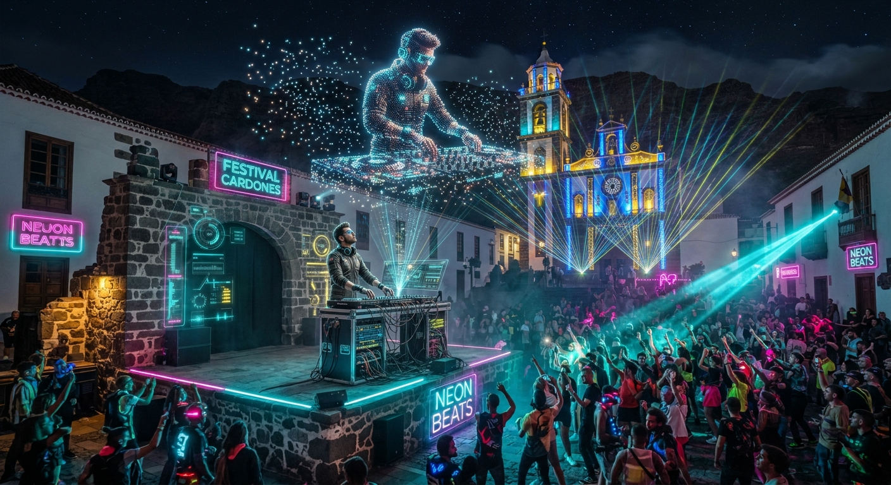
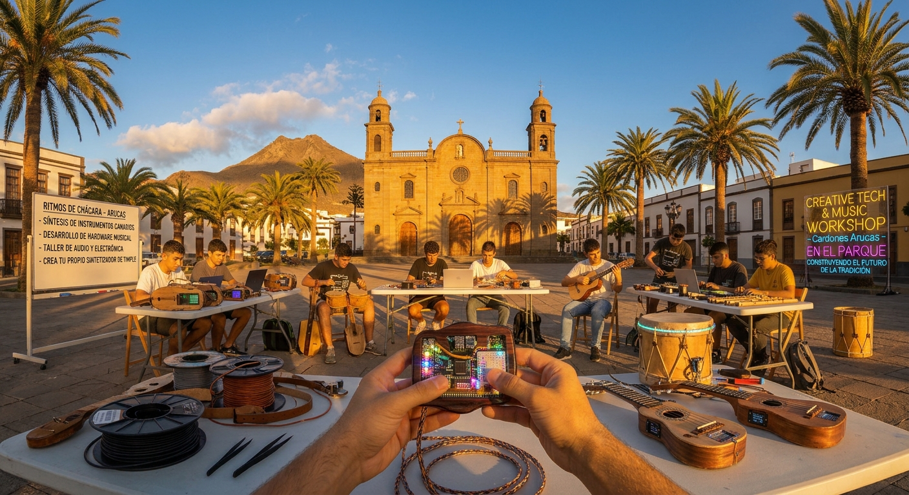

Cromo y Barro
Grupo que fusiona la música tradicional con sintetizadores

Conéctate a la Red. Enciende el Bluetooth. Siente la tierra
Localidad y fecha: Cardones (Arucas), 26 de noviembre de 2026
Objetivos del festival: Promover la música futurista y la cultura digital accesible en el municipio de Arucas
Grupo que fusiona la música tradicional con sintetizadores
Sesión de música electrónica con drones

Aprende a construir instrumentos autóctonos con electrónica reciclada.

| Hora | Actividad | Escenario / Lugar | Duración |
|---|---|---|---|
| 16:00 | Apertura de accesos y red cibernética | Entrada Principal | 1 hora |
| 17:00 | Taller de Chácaras Robóticas | Carpa de Innovación | 2 horas |
| 19:00 | Charla: Cultura canaria en el siglo XXII | Auditorio Neón | 1 hora |
| 20:00 | Actuación de Cromo y Barro | Escenario Central | 1.5 horas |
| 21:30 | Sesión de DJ Arucas Hologram | Escenario Central | 2 horas |
| 23:30 | Cierre con espectáculo de luces de neón | Recinto General | 30 min |
Los datos recabados a través de este formulario serán procesados de forma confidencial con el único propósito de gestionar las reservas del festival Cardones 2099.